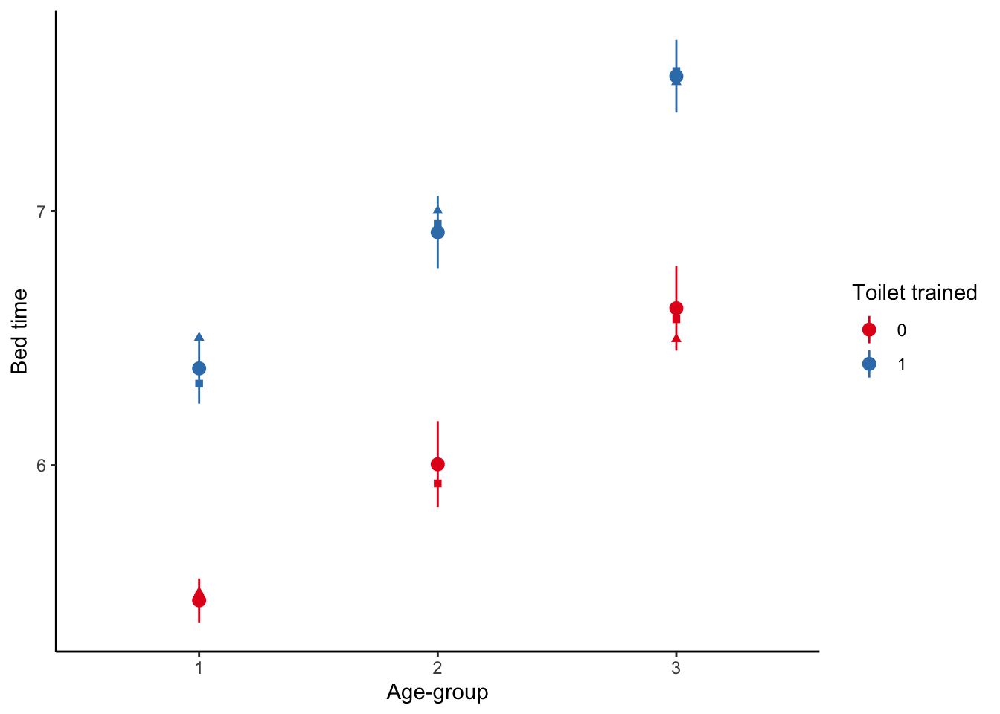
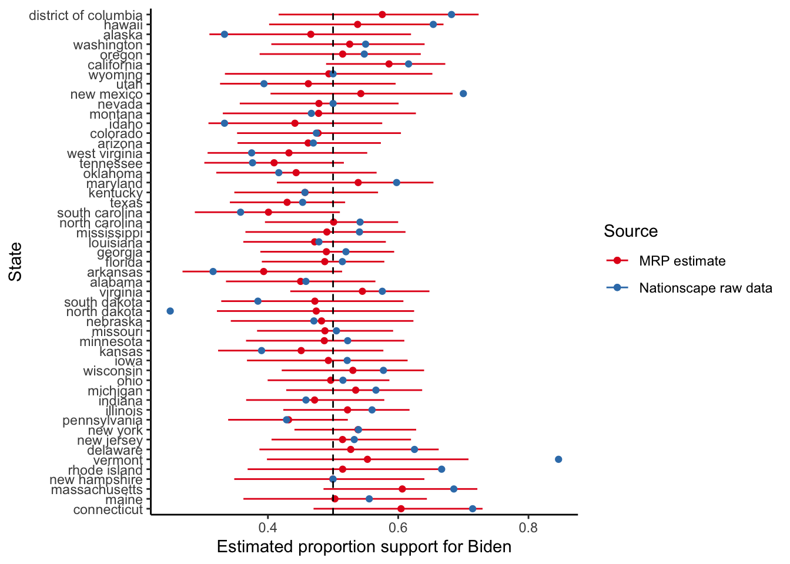

Read Forecasting elections with non-representative polls, (Wang et al. 2015)
Discusses the use of MRP on a biased sample drawn from the XBox platform.
Read Analyzing name changes after marriage using a non-representative survey, (Alexander 2019)
Implements MRP on a survey and provides detailed code and data.
Read Mister P helps us understand vaccine hesitancy, (Green 2020)
Another worked example of MRP with code and data available.
Watch Statistical Models of Election Outcomes, (Gelman 2020)
Discussion of building models for elections.
Listen to Episode 248: Are Democrats being irrational? (David Shor), (Galef 2020)
Discusses the use of data in politics (with lessons that are broadly applicable).
Key concepts and skills
Multilevel regression with post-stratification (MRP) takes a sample, usually a large poll, and uses that to train a model. Then that trained model is applied to a post-stratification dataset, typically a census or other larger sample.
We use models because we are interested in answering questions that our data alone cannot answer. For instance, we may want to know what is going on in every political district, but it would be too expensive to appropriately poll every district. If we had perfect data, we would not need a model.
Models allow us to answer some questions, but the trade-off is that we answer them with uncertainty. In the MRP set-up our model borrows information from areas where we know a lot and uses that in areas where we know little. The degree to which this is appropriate is one aspect we would always like to know more about. One of the main difficulties with MRP is obtaining access to the required datasets.
The fundamental assumption of MRP is that the relationship between predictors, like gender, age-group, district, etc, and the outcome, for instance, “who are you going to vote for?”, are steady between the sample and the post-stratification dataset. One key question when considering MRP estimates is: “To what extent does that assumption hold?”
As always, transparency is critical and there should be little reason that data preparation and modelling code cannot be made public alongside the model results even if the survey data cannot. This enables scrutiny from independent experts and enhances the credibility of MRP estimates.
[The Presidential election of] 2016 was the largest analytics failure in US political history.
David Shor, 13 August 2020
Multilevel regression with post-stratification (MRP) is a popular way to adjust non-representative surveys to analyze opinion and other responses. It uses a regression model to relate individual-level survey responses to various characteristics and then rebuilds the sample to better match the population. In this way MRP can not only allow a better understanding of responses, but also allow us to analyze data that may otherwise be unusable. However, it can be a challenge to get started with MRP as the terminology may be unfamiliar, and the data requirements can be onerous.
Consider a biased survey. For instance, perhaps we conducted a survey about computer preferences at an academic conference, so people with post-graduate degrees are likely over-represented. We are nonetheless interested in making claims about the broader population. Let us say that we found 37.5 per cent of respondents prefer Macs. One way forward is to just ignore the bias and conclude that “37.5 per cent of people prefer Macs”. Another way is to adjust using information that we know. For instance, say 50 per cent of our respondents with a post-graduate degree prefer Macs, and of those without a post-graduate degree, 25 per cent prefer Macs. Then if we knew what proportion of the broader population had a post-graduate degree, say 10 per cent, then we could conduct re-weighting, or post-stratification, to create an estimate: \(0.5 \times 0.1 + 0.25 \times 0.9 = 0.275\). Our estimate would be that 27.5 per cent of people prefer Macs. MRP is a third approach and uses a model to help do that re-weighting. Here we could use logistic regression to estimate the relationship between computer preferences and highest educational attainment in our survey. We then apply that relationship to a dataset that is representative, in terms of education, of our population. One advantage of this is that we can better account for uncertainty. In terms of a real-world example, Clinton, Lapinski, and Trussler (2022) find a substantial difference in telephone response rates between Democrats and Republicans in the 2020 US Presidential election and that when corrected this reduces average polling error.
MRP is a handy approach when dealing with survey data. Hanretty (2020) describes how we use MRP because the alternatives either do badly or are expensive. Essentially, MRP trains a model based on the survey, and then applies that trained model to another dataset. There are two main, related, advantages:
It can allow us to “re-weight” in a way that brings uncertainty front-of-mind and is not as hamstrung by small samples. The alternative way to deal with having a small sample is to either gather more data or throw it away.
It can allow us to use broad surveys to speak to subsets in a way that remains representative. For instance, say we gathered a sample that was representative of age, gender, and education across the country. If we were interested in state/provincial-specific estimates there is no guarantee that representativeness would hold at that disaggregated level.
From a practical perspective, it tends to be less expensive to collect non-probability samples and so there are benefits of being able to use these types of data. That said, MRP is not a magic-bullet and the laws of statistics still apply. We will have larger uncertainty around our estimates than when using probability samples and they will still be subject to all the usual biases. It is an exciting area of research in both academia and industry.
The workflow that we need for MRP is straight-forward, but the details and tiny decisions that have to be made at each step can become overwhelming. The point to keep in mind is that we are trying to create a relationship between two datasets using a statistical model, and so we need to establish similarity between the two datasets in terms of their variables and levels. The steps are:
gather and prepare the survey dataset, thinking about what is needed for coherence with the post-stratification dataset;
gather and prepare the post-stratification dataset thinking about what is needed for coherence with the survey dataset;
model the variable of interest from the survey using independent variables and levels that are available in both the survey and the post-stratification datasets;
apply the model to the post-stratification data.
One famous MRP example is Wang et al. (2015). They used data from the Xbox gaming platform to forecast the 2012 US Presidential Election. Wang et al. (2015) were able to implement an opt-in poll which was available on the Xbox gaming platform during the 45 days leading up to the 2012 US presidential election, which was between Barack Obama and Mitt Romney. Each day there were three to five questions, including voter intention: “If the election were held today, who would you vote for?”. Respondents were allowed to answer at most once per day. And first-time respondents were asked to provide information about themselves, including their sex, race, age, education, state, party ID, political ideology, and who they voted for in the 2008 presidential election.
Shoulders of giants
Dr Andrew Gelman is Higgins Professor of Statistics and Political Science at Columbia University. After earning a PhD in Statistics from Harvard University in 1990, he was appointed as an assistant professor at the University of California, Berkeley, and then moved to Columbia in 1996, where he was promoted to full professor in 2000. His research focuses on statistics, social sciences, and their intersection. For instance, Wang et al. (2015) showed that biased surveys can still have value. He was the principal investigator for Stan, a probabilistic programming language, that is widely used for Bayesian modelling. And he has written many books, with Gelman and Hill (2007) and Gelman et al. (2014) having been especially influential on a generation of researchers that followed. He was appointed a Fellow of the American Statistical Association in 1998 and awarded the COPSS Presidents’ Award in 2003.
In total, 750,148 interviews were conducted, with 345,858 unique respondents, over 30,000 of whom completed five or more polls. As may be expected, young men dominate the Xbox population: 18-to-29-year-olds comprise 65 per cent of the Xbox dataset, compared to 19 per cent in the exit poll; and men make up 93 per cent of the Xbox sample but only 47 per cent of the electorate.
The details do not matter, but essentially they model how likely a respondent is to vote for Obama, given various information such as state, education, sex, etc:
Having a trained model that considers the effect of these various independent variables on support for the candidates, they now post-stratify, where each of these “cell-level estimates are weighted by the proportion of the electorate in each cell and aggregated to the appropriate level (i.e., state or national).”
This means that they need cross-tabulated population data. In general, the census would have worked, or one of the other large surveys available in the US, but the difficulty is that the variables need to be available on a cross-tab basis. As such, they use exit polls (not a viable option for most other countries).
They make state-specific estimates by post-stratifying to the features of each state. And they similarly examine demographic-differences. Finally, they convert their estimates into electoral college estimates.
In general, MRP is a good way to accomplish specific aims, but it is not without trade-offs. If we have a good quality survey, then it may be a way to speak to disaggregated aspects of it. Or if we are concerned about uncertainty then it is a good way to think about that. If we have a biased survey, then it is a great place to start, but it is not a panacea. There is plenty of scope for exciting work from a variety of approaches. For instance, from a more statistical perspective, there is a lot of work to do in terms of thinking through how survey design and modelling approaches interact and the extent to which we are underestimating uncertainty. It is also very interesting to think through the implications of small samples and uncertainty in the post-stratification dataset. There is an awful lot to do in terms of thinking through what the appropriate model is to use, and how do we even evaluate what “appropriate” means here, for instance, based on Si (2020). More generally, we just have little idea of the conditions under which we will have the stable preferences and relationships that are required for MRP to be accurate. A great deal of work is needed to understand how this relates to uncertainty in survey design, for instance, based on Lauderdale et al. (2020) or Ghitza and Gelman (2020).
In this chapter, we begin with simulating a situation in which we pretend that we know the features of the population. We then consider the famous Xbox poll MRP example in greater depth. We will finally move to examples from the Australian political context, and then the US 2020 Presidential Election.
15.2 Multilevel modelling
Before we can turn to MRP, we need to become comfortable with multilevel modelling This approach goes by a variety of names including “hierarchical”, and “random effects”. While there are sometimes small differences in meaning between disciplines, in general they refer to the same or at least very similar ideas.
The fundamental insight of multilevel modelling, is that a lot of the time, our observations are not completely independent of each other, and can instead be grouped. Accounting for that grouping when we model, can provide us with some useful information. For instance, there is a difference in the earnings of professional athletes depending on whether they compete in men’s or women’s events. If we were interested in trying to forecast the earnings of a particular athlete, based on their competition results, then knowing which type of competition it was would enable the model to make a better forecast.
We distinguish between three settings: 1) Complete pooling, where we treat every observation as being from the same group, which is what we have been doing to this point. 2) No pooling, where we treat every group separately, which might happen if we were to run a separate regression for each group. 3) Partial pooling, where we allow group membership to have some influence. As an example, consider we are interested in the relationship between GDP and inflation for each of the countries in the world. Complete pooling would have us put all the countries into the one group; no pooling would have us run separate regressions for each continent. We will now illustrate the partial pooling approach.
In general there are two ways to go about this: 1) enable varying intercepts, or 2) enable varying slopes. We consider only the first, but if the latter is of interest, then McElreath (2020) and Johnson, Ott, and Dogucu (2022) are the next natural steps. Let us consider a situation in which the probability of support for a particular political party depends on their age-group, and the state that they live in.
We include this in the function with “(1 | state)” within stan_glmer() from rstanarm(Goodrich et al. 2020). This term indicates that we are looking at a group effect by state, which means that the fitted model’s intercept is allowed to vary according by state.
stan_glmer
family: binomial [logit]
formula: supports ~ factor(age_group) + (1 | state)
observations: 1000
------
Median MAD_SD
(Intercept) -5.0 0.6
factor(age_group)15 3.1 0.5
factor(age_group)30 5.9 0.6
factor(age_group)45 8.6 0.7
Error terms:
Groups Name Std.Dev.
state (Intercept) 3.1
Num. levels: state 50
------
* For help interpreting the printed output see ?print.stanreg
* For info on the priors used see ?prior_summary.stanreg
It is worth trying to look for opportunities to use a multilevel model when you come to a new modelling situation, especially one where inference is the primary concern. There is often some grouping that can be taken advantage of to provide the model with more information.
When we move to multilevel modelling, it is possible that some rstanarm models will result in a warning about “divergent transitions”. For the purposes of getting a model working for this book, if there are just a handful of warnings and the Rhat values of the coefficients are all close to one (check this with any(summary(change_this_to_the_model_name)[, "Rhat"] > 1.1)), then just ignore it. If there are more than a handful, and/or any of the Rhats are not close to one, then add “adapt_delta = 0.99” as an argument to stan_glmer() and re-run the model (keeping in mind that it will take longer to run). If that does not fix the issue, then simplify the model by removing a variable. We will see an example later when we apply MRP to the 2020 US election, where the “adapt_delta” strategy fixes the issue.
15.2.1 Austen, Brontë, Dickens, and Shakespeare
As an example of multilevel modelling regression, we consider data from Project Gutenberg on the length of books by two different authors: Jane Austen, Charlotte Brontë, Charles Dickens, and William Shakespeare. We would expect that Austen, as she wrote books, will have longer books, than Shakespeare, as he wrote plays.
# A tibble: 125 × 3
author title number_of_lines
<chr> <chr> <int>
1 Austen, Jane Emma 16488
2 Austen, Jane Lady Susan 2525
3 Austen, Jane Love and Freindship [sic] 3401
4 Austen, Jane Mansfield Park 15670
5 Austen, Jane Northanger Abbey 7991
6 Austen, Jane Persuasion 8353
7 Austen, Jane Pride and Prejudice 14199
8 Austen, Jane Sense and Sensibility 12673
9 Brontë, Charlotte Jane Eyre: An Autobiography 21001
10 Brontë, Charlotte Shirley 25520
# ℹ 115 more rows
In this case it is not overwhelmingly obvious that the multilevel model is the better choice, but it is slightly preferred on the basis of LOO.
15.3 Simulation
15.3.1 Construct a population
To get started we will simulate some data about children’s behavior from a population that has various properties, take a biased sample, and then conduct MRP to demonstrate how we can get those properties back. We are going to have two “explanatory variables”—age-group and toilet-trained—and one dependent variable - bedtime. Bedtime will increase as age-group increases, and will be later for children that are toilet-trained, compared with those that are not. To be clear, in this example we will “know” the “true” features of the population, but this is not something that occurs when we use real data—it is just to help to explain what is happening in MRP.
library(tidyverse)set.seed(853)size_of_population <-1000000population_for_mrp_example <-tibble(age_group =sample(x =c(1:3),size = size_of_population,replace =TRUE ),toilet_trained =sample(x =c(0, 1),size = size_of_population,replace =TRUE ),noise =rnorm(size_of_population, mean =0, sd =1),# No special reason for this intercept to be five; it could be anything.bed_time =5+0.5* age_group +1* toilet_trained + noise, ) |>select(-noise) |>mutate(age_group =as_factor(age_group),toilet_trained =as_factor(toilet_trained) )population_for_mrp_example |>head()
That is, as always, when we have a dataset, we first try to graph it to better understand what is going on. As there are a million points, we can just grab the first 1,000 so that it plots nicely.
And we can also work out what the “truth” is for the information that we are interested in (remembering that we would never actually know this when we move away from simulated examples) (Table 15.2).
Table 15.2: Average metrics bedtime, based on whether a toddler is toilet trained
Age-group
Is toilet trained
Average bedtime
1
0
5.50
1
1
6.50
2
0
6.00
2
1
7.00
3
0
6.50
3
1
7.51
15.3.2 Get a biased sample from it
Now we want to pretend that we have some survey that has a biased sample. We will allow that it over-samples children that are younger and those that are not toilet-trained. For instance, perhaps we gathered our sample based on the records of a pediatrician, so it is more likely that they will see this biased sample of children. We are interested in assessing what proportion of children are toilet-trained at various age-groups compared with the whole population, and how this may affect raw estimates of bedtimes for different sub-groups.
# This code based on that of Monica Alexanderset.seed(853)# Add a weight for each "type" (has to sum to one)population_for_mrp_example <- population_for_mrp_example |>mutate(weight =case_when( toilet_trained ==0& age_group ==1~0.7, toilet_trained ==0~0.1, age_group %in%c(1, 2, 3) ~0.2 ),id =1:n() )get_these <-sample(x = population_for_mrp_example$id,size =1000,prob = population_for_mrp_example$weight )sample_for_mrp_example <- population_for_mrp_example |>filter(id %in% get_these) |>select(-weight, -id)# Clean uppoststratification_dataset <- population_for_mrp_example |>select(-weight, -id)
It is clear that our sample has a different average bedtime than the overall population, but let us just do the same exercise as before to look at the mean, by age and toilet-trained status.
Now we will use a post-stratification dataset to get some estimates of the number in each cell. We typically use a larger dataset that may more closely reflection the population. In the US a popular choice is the American Community Survey (ACS), while in other countries we typically have to use the census.
In this simulation example, we will just take a 10 per cent sample from the population and use that as our post-stratification dataset.
In an ideal world we have individual-level data in our post-stratification dataset (that is the case above). In that world we can apply our model to each individual. The more likely situation, in reality, is that we just have counts by groups, so we are going to try to construct an estimate for each group.
At this point we can have a look at our MRP estimates (circles) along with their confidence intervals, and compare them the raw estimates from the biased sample data (squares). In this case, because we know the truth, we can also compare them to the known truth (triangles), but that is not something we can do normally.
poststrat_dataset_grouped |>ggplot(aes(x = age_group, y = fit)) +geom_point(data = population_for_mrp_example_summarised,aes(x = age_group, y = median_bed_time, color = toilet_trained),shape =17 ) +geom_point(data = sample_for_mrp_example_summarized,aes(x = age_group, y = median_bed_time, color = toilet_trained),shape =15 ) +geom_pointrange(aes(ymin = lwr, ymax = upr, color = toilet_trained)) +labs(x ="Age-group",y ="Bed time",color ="Toilet trained" ) +theme_classic() +scale_color_brewer(palette ="Set1")

In most cases the MRP estimates are much closer to the truth than the raw data estimates.
15.4 Australian voting
15.4.1 Overview
As a reminder, the workflow that we use is:
read in the poll;
model the poll;
read in the post-stratification data; and
apply the model to the post-stratification data.
In the earlier example, we did not really do too much in the modelling step, and despite the name “multilevel modelling with post-stratification”, we did not actually use a multilevel model. There is nothing that says you have to use a multilevel model, but a lot of situations will have circumstances such that it is not likely to do any worse. To be clear, this means that although we have individual-level data, there is some grouping of the individuals that we will take advantage of. For instance, in the case of trying to model elections, usually districts/divisions/electorates/ridings/etc exist within provinces/states so it would likely make sense to, at least, include a coefficient that adjusts the intercept for each province.
In this section we are going to simulate another dataset and then fit a few different models to it. We are going to draw on the Australian elections set-up. In Australia we have a parliamentary system, with 151 seats in the parliament, one for each electorate. These electorates are grouped within six states and two territories. There are two major parties - the Australian Labor Party (ALP) and the Liberal Party (LP). Somewhat confusingly, the Liberal party are actually the conservative, right-wing party, while the Labor party are the progressive, left-wing, party.
15.4.2 Construct a survey
To move us slightly closer to reality, we are going to simulate a survey (rather than sample from a population as we did earlier) and then post-stratify it using real data. The dependent variable is “supports_ALP”, which is a binary variable - either 0 or 1. We will just start with three independent variables here:
“gender”, which is either “female” or “male” (as that is what is available from the Australian Bureau of Statistics);
“age_group”, which is one of four groups: “ages 18 to 29”, “ages 30 to 44”, “ages 45 to 59”, “ages 60 plus”;
“state”, which is one of eight integers: 1 - 8 (inclusive).
library(tidyverse)set.seed(853)size_of_sample_for_australian_polling <-2000sample_for_australian_polling <-tibble(age_group =sample(x =c(0:3),size = size_of_sample_for_australian_polling,replace =TRUE ),gender =sample(x =c(0:1),size = size_of_sample_for_australian_polling,replace =TRUE ),state =sample(x =c(1:8),size = size_of_sample_for_australian_polling,replace =TRUE ),noise =rnorm(size_of_sample_for_australian_polling, mean =0, sd =1),support_alp =1+0.5* age_group +0.5* gender +0.01* state + noise )# Normalize the outcome variablesample_for_australian_polling <- sample_for_australian_polling |>mutate(support_alp =if_else( support_alp >median(support_alp, na.rm =TRUE),"Supports ALP","Does not" ) )# Clean up the simulated datasample_for_australian_polling <- sample_for_australian_polling |>mutate(age_group =case_when( age_group ==0~"Ages 18 to 29", age_group ==1~"Ages 30 to 44", age_group ==2~"Ages 45 to 59", age_group ==3~"Ages 60 plus",TRUE~"Problem" ),gender =case_when( gender ==0~"Male", gender ==1~"Female",TRUE~"Problem" ),state =case_when( state ==1~"Queensland", state ==2~"New South Wales", state ==3~"Australian Capital Territory", state ==4~"Victoria", state ==5~"Tasmania", state ==6~"Northern Territory", state ==7~"South Australia", state ==8~"Western Australia",TRUE~"Problem" ), ) |>select(-noise)# Tidy the classsample_for_australian_polling <- sample_for_australian_polling |>mutate(across(c(age_group, gender, state, support_alp), as_factor))sample_for_australian_polling |>head()
# A tibble: 6 × 4
age_group gender state support_alp
<fct> <fct> <fct> <fct>
1 Ages 18 to 29 Female South Australia Supports ALP
2 Ages 60 plus Male South Australia Supports ALP
3 Ages 30 to 44 Male Victoria Does not
4 Ages 18 to 29 Male Tasmania Does not
5 Ages 18 to 29 Female Victoria Does not
6 Ages 18 to 29 Male Queensland Supports ALP
Finally, we want our survey to over-sample females, so we will just get rid of 300 males.
This polling data was generated to make both males and older people less likely to vote for the ALP, and females and younger people more likely to vote for the ALP. Females are over-sampled. As such, we should have an ALP skew on the dataset. We are going to use gtsummary to quickly make a summary table (Arel-Bundock 2021).
Now we would like to see if we can get our results back (we should find females more likely than males to vote for Australian Labor Party and that people are less likely to vote Australian Labor Party as they get older). Our model is:
\[
\mbox{Pr}(\hat{FP}_{i,p=1}) = \mbox{logit}^{-1} \left(\beta_0 + \beta_1 \times \mbox{gender}_is + \beta_2\times \mbox{age}_i + \beta_3 \times \mbox{state}_i \right)
\] This model says that the probability that some person, \(i\), will vote for the Australian Labor Party depends on their gender, age-group, and state of residence. Based on our simulated data, we would like younger age-groups to be more likely to vote for the Australian Labor Party and for males to be less likely to vote for the Australian Labor Party.
Our dependent variable is a binary, thus we used logistic regression so the results are a little more difficult to interpret. Essentially we have got our inputs back.
15.4.4 Post-stratify
Now we would like to see if we can use what we found in the poll to get an estimate for each state based on their demographic features.
First read in some real demographic data, on a state basis, from the ABS.
At this point, we have got a decision to make because we need the variables to be the same in the survey and the post-stratification dataset, but here the state abbreviations have been used, while in the survey, the full names were used. We will change the post-stratification dataset because the survey data has already been modelled.
post_strat_census_data <- post_strat_census_data |>mutate(state =case_when( state =="ACT"~"Australian Capital Territory", state =="NSW"~"New South Wales", state =="NT"~"Northern Territory", state =="QLD"~"Queensland", state =="SA"~"South Australia", state =="TAS"~"Tasmania", state =="VIC"~"Victoria", state =="WA"~"Western Australia",TRUE~"Problem" ),age_group =case_when( age_group =="ages18to29"~"Ages 18 to 29", age_group =="ages30to44"~"Ages 30 to 44", age_group =="ages45to59"~"Ages 45 to 59", age_group =="ages60plus"~"Ages 60 plus",TRUE~"Problem" ) )
We are just going to do some rough forecasts. For each gender and age-group we want the relevant coefficient from the example data and from there we can construct the estimates.
post_strat_census_data <- alp_support |>predict(newdata = post_strat_census_data, type ="response", se.fit =TRUE) |>as_tibble() |>cbind(post_strat_census_data)post_strat_census_data |>mutate(alp_predict_prop = fit * cell_prop_of_division_total) |>group_by(state) |>summarise(alp_predict =sum(alp_predict_prop))
# A tibble: 8 × 2
state alp_predict
<chr> <dbl>
1 Australian Capital Territory 0.551
2 New South Wales 0.487
3 Northern Territory 0.546
4 Queensland 0.491
5 South Australia 0.403
6 Tasmania 0.429
7 Victoria 0.521
8 Western Australia 0.460
We now have post-stratified estimates for each state. Our model has a fair few weaknesses. For instance, small cell counts are going to be problematic. And our approach ignores uncertainty, but now that we have something working we can complicate it.
15.4.5 Improving the model
We would like to address some of the major issues with our approach, specifically being able to deal with small cell counts, and also taking better account of uncertainty. As we are dealing with survey data, prediction intervals or something similar are critical, and it is not appropriate to only report central estimates. To do this we will use the same broad approach as before, but just improve the model. We are going to change to a Bayesian model and use rstanarm(Goodrich et al. 2020).
Now, using the same basic model as before, but in a Bayesian setting.
As before, we would like an estimate for each state based on their demographic features. We are just going to do some rough forecasts. For each gender and age-group we want the relevant coefficient in the example data and we can construct the estimates (this code is from Alexander (2019)). We are going to use tidybayes for this (Kay 2022).
library(tidybayes)post_stratified_estimates <-# Bayesian model improved_alp_support |># Generate predictions from samples of post-stratification datasetadd_epred_draws(newdata = post_strat_census_data) |>rename(alp_predict = .epred) |># Post-stratificationmutate(alp_predict_prop = alp_predict * cell_prop_of_division_total) |>group_by(state, .draw) |>summarise(alp_predict =sum(alp_predict_prop)) |>group_by(state) |># Calculate mean and confidence interval for each statesummarise(mean =mean(alp_predict),lower =quantile(alp_predict, 0.025),upper =quantile(alp_predict, 0.975) )post_stratified_estimates
# A tibble: 8 × 4
state mean lower upper
<chr> <dbl> <dbl> <dbl>
1 Australian Capital Territory 0.550 0.494 0.604
2 New South Wales 0.486 0.429 0.544
3 Northern Territory 0.544 0.483 0.607
4 Queensland 0.491 0.432 0.548
5 South Australia 0.412 0.361 0.464
6 Tasmania 0.429 0.372 0.487
7 Victoria 0.519 0.453 0.583
8 Western Australia 0.460 0.401 0.520
We now have post-stratified estimates for each division. Our new Bayesian approach will enable us to think more deeply about uncertainty. We could complicate this in a variety of ways including adding more coefficients (but remember that we would need to get new cell counts), or adding some layers.
One interesting aspect is that our multilevel approach will allow us to deal with small cell counts by borrowing information from other cells. Even if we were to remove most of the, say, 18-to-29-year-old, male respondents from Tasmania our model would still provide estimates. It does this by pooling, in which the effect of these young, male, Tasmanians is partially determined by other cells that do have respondents.
There are many interesting aspects that we may like to communicate to others. For instance, we may like to show how the model is affecting our estimates of the results. We can make a graph that compares the raw estimates and the raw estimates from the biased survey sample with the model estimates. Note the skew in favor of the ALP in the biased sample estimates, and how the model is able to correct for this in most cases.
Similarly, we may like to plot the distribution of the coefficients. We can work out which coefficients to be passed to gather_draws() with tidybayes::get_variables(model); in this example we passed “b_.”, but that will not always be the case.
US presidential elections have many features that are unique to the US, but the model that we are going to build here will be generalizable, and a variant of the earlier model for the Australian election. We will use survey data from the Democracy Fund Voter Study Group. They conducted polling in the lead-up to the US election and make this publicly available after registration. We will use IPUMS, introduced in Chapter 6, to access the 2018 American Community Survey (ACS) as a post-stratification dataset. We will use state, age-group, gender, and education as explanatory variables.
15.5.1 Survey data
First we need to get the survey data. Go to the Democracy Fund Voter Study Group website, then look for “Nationscape” and request access to the data. This is usually quick, but could take a day or two. After getting access, focus on the “.dta” files. Nationscape conducted many surveys in the lead-up to the election, so there are many files. The filename is the reference date, where “ns20200625” refers to 25 June 2020. That is the file that we use here, but many of them are similar. We download and save it as “ns20200625.dta”.
As introduced in Appendix A, we can import “.dta” files using haven(Wickham, Miller, and Smith 2022). The code that we use to import and prepare the survey dataset is based on that of Mitrovski, Yang, and Wankiewicz (2020).
# The Stata format separates labels so reunite thoseraw_nationscape_data <- labelled::to_factor(raw_nationscape_data)# Just keep relevant variablesnationscape_data <- raw_nationscape_data |>select( vote_2020, gender, education, state, age )# For simplicity, remove anyone not voting for Trump or Bidennationscape_data <- nationscape_data |>filter(vote_2020 =="Joe Biden"| vote_2020 =="Donald Trump") |>mutate(vote_biden =if_else(vote_2020 =="Joe Biden", 1, 0)) |>select(-vote_2020)# Create the dependent variables by grouping the existing variablesnationscape_data <- nationscape_data |>mutate(age_group =case_when(# case_when works in order and exits when there is a match age <=29~"age_18-29", age <=44~"age_30-44", age <=59~"age_45-59", age >=60~"age_60_or_more",TRUE~"Trouble" ),gender =case_when( gender =="Female"~"female", gender =="Male"~"male",TRUE~"Trouble" ),education_level =case_when( education =="3rd Grade or less"~"High school or less", education =="Middle School - Grades 4 - 8"~"High school or less", education =="Completed some high school"~"High school or less", education =="High school graduate"~"High school or less", education =="Other post high school vocational training"~"Some post sec", education =="Completed some college, but no degree"~"Some post sec", education =="Associate Degree"~"Post sec +", education =="College Degree (such as B.A., B.S.)"~"Post sec +", education =="Completed some graduate, but no degree"~"Post sec +", education =="Masters degree"~"Grad degree", education =="Doctorate degree"~"Grad degree",TRUE~"Trouble" ) ) |>select(-education, -age)
# A tibble: 6 × 5
gender state vote_biden age_group education_level
<chr> <chr> <dbl> <chr> <chr>
1 female WI 0 age_45-59 Post sec +
2 female VA 0 age_45-59 Post sec +
3 female TX 0 age_60_or_more High school or less
4 female WA 0 age_45-59 High school or less
5 female MA 1 age_18-29 Some post sec
6 female TX 1 age_30-44 Some post sec
As we have seen, one of the most difficult aspects with MRP is ensuring consistency between the datasets. In this case, we need to do some work to make the variables consistent.
# Format state names to match IPUMSstates_names_and_abbrevs <-tibble(stateicp = state.name, state = state.abb)nationscape_data <- nationscape_data |>left_join(states_names_and_abbrevs, by ="state")rm(states_names_and_abbrevs)# Make lowercase to match IPUMS datanationscape_data <- nationscape_data |>mutate(stateicp =tolower(stateicp))# Replace NAs with DCnationscape_data$stateicp <-replace_na(nationscape_data$stateicp, "district of columbia")# Tidy the classnationscape_data <- nationscape_data |>mutate(across(c(gender, stateicp, education_level, age_group), as_factor))
Finally, we save the prepared dataset.
# Save datawrite_csv(nationscape_data, "outputs/data/polling_data.csv")nationscape_data |>head()
# A tibble: 6 × 6
gender state vote_biden age_group education_level stateicp
<fct> <chr> <dbl> <fct> <fct> <fct>
1 female WI 0 age_45-59 Post sec + wisconsin
2 female VA 0 age_45-59 Post sec + virginia
3 female TX 0 age_60_or_more High school or less texas
4 female WA 0 age_45-59 High school or less washington
5 female MA 1 age_18-29 Some post sec massachusetts
6 female TX 1 age_30-44 Some post sec texas
15.5.2 Post-stratification data
We have many options for a dataset to post-stratify by and there are various considerations. We are after a dataset that is better quality (however that is to be defined), and likely larger. From a strictly data perspective, the best choice would probably be something like the Cooperative Election Study (CES), as used in Chapter 12, however it is only released after the election and so it is not a reasonable choice. Wang et al. (2015) use exit poll data, but again that is only available after the election.
We will use the 2019 American Community Survey (ACS), and want the following variables: “STATEICP” (in “household”), and “SEX”, “AGE”, and “EDUC” (in “person”). Instructions for how to get these data are in Chapter 6. It is worth briefly checking the dimensions of the request. It should be around one million rows, and ten to twenty columns. If it is much more than 300MB then check whether there are variables accidentally selected that are not needed or reduce the number of observations. Submit the request and within a day IPUMS should send an email with a link to the dataset. We assume the dataset has been saved locally as “usa_00004.dta” (your dataset may have a slightly different filename).
We will now tidy and prepare the post-stratification dataset, again based on Mitrovski, Yang, and Wankiewicz (2020).
raw_poststrat_data <-read_dta("usa_00004.dta")
raw_poststrat_data <- labelled::to_factor(raw_poststrat_data)poststrat_data <- raw_poststrat_data |>mutate(age =as.numeric(age)) |>filter(inctot <9999999) |>filter(age >=18) |>mutate(gender = sex) |>mutate(age_group =case_when(# case_when works in order and exits when there is a match age <=29~"age_18-29", age <=44~"age_30-44", age <=59~"age_45-59", age >=60~"age_60_or_more",TRUE~"Trouble" ),education_level =case_when( educd =="nursery school, preschool"~"High school or less", educd =="kindergarten"~"High school or less", educd =="grade 1"~"High school or less", educd =="grade 2"~"High school or less", educd =="grade 3"~"High school or less", educd =="grade 4"~"High school or less", educd =="grade 5"~"High school or less", educd =="grade 6"~"High school or less", educd =="grade 7"~"High school or less", educd =="grade 8"~"High school or less", educd =="grade 9"~"High school or less", educd =="grade 10"~"High school or less", educd =="grade 11"~"High school or less", educd =="12th grade, no diploma"~"High school or less", educd =="regular high school diploma"~"High school or less", educd =="ged or alternative credential"~"High school or less", educd =="some college, but less than 1 year"~"Some post sec", educd =="1 or more years of college credit, no degree"~"Some post sec", educd =="associate's degree, type not specified"~"Post sec +", educd =="bachelor's degree"~"Post sec +", educd =="master's degree"~"Grad degree", educd =="professional degree beyond a bachelor's degree"~"Grad degree", educd =="doctoral degree"~"Grad degree", educd =="no schooling completed"~"High school or less",TRUE~"Trouble" ) )# Just keep relevant variablespoststrat_data <- poststrat_data |>select( gender, age_group, education_level, stateicp )# Tidy the classpoststrat_data <- poststrat_data |>mutate(across(c(gender, stateicp, education_level, age_group), as_factor))# Save datawrite_csv(poststrat_data, "outputs/data/us_poststrat.csv")poststrat_data
# A tibble: 497,508 × 4
gender age_group education_level stateicp
<fct> <fct> <fct> <fct>
1 female age_18-29 Some post sec alabama
2 female age_60_or_more Some post sec alabama
3 male age_45-59 Some post sec alabama
4 male age_30-44 High school or less alabama
5 female age_60_or_more High school or less alabama
6 male age_30-44 High school or less alabama
7 female age_30-44 Some post sec alabama
8 male age_18-29 Post sec + alabama
9 female age_60_or_more High school or less alabama
10 male age_30-44 High school or less alabama
# ℹ 497,498 more rows
This dataset is on an individual level. We will create counts of each sub-cell, and then proportions by state.
And finally we add proportions for each of these cells.
poststrat_data_cells <- poststrat_data_cells |>group_by(stateicp) |>mutate(prop = n /sum(n)) |>ungroup()poststrat_data_cells
# A tibble: 1,629 × 6
stateicp gender age_group education_level n prop
<fct> <fct> <fct> <fct> <int> <dbl>
1 connecticut male age_18-29 Some post sec 149 0.0260
2 connecticut male age_18-29 High school or less 232 0.0404
3 connecticut male age_18-29 Post sec + 96 0.0167
4 connecticut male age_18-29 Grad degree 25 0.00436
5 connecticut male age_60_or_more Some post sec 142 0.0248
6 connecticut male age_60_or_more High school or less 371 0.0647
7 connecticut male age_60_or_more Post sec + 226 0.0394
8 connecticut male age_60_or_more Grad degree 210 0.0366
9 connecticut male age_45-59 Some post sec 115 0.0200
10 connecticut male age_45-59 High school or less 265 0.0462
# ℹ 1,619 more rows
15.5.3 Model
We are going to use logistic regression to estimate a model where the binary of support for Biden versus Trump is explained by gender, age-group, education-level, and state. Following Kennedy and Gabry (2020) we will use rstanarm(Goodrich et al. 2020).
# A tibble: 6 × 4
stateicp mean lower upper
<fct> <dbl> <dbl> <dbl>
1 connecticut 0.604 0.470 0.729
2 maine 0.503 0.362 0.644
3 massachusetts 0.606 0.485 0.722
4 new hampshire 0.500 0.348 0.640
5 rhode island 0.515 0.369 0.665
6 vermont 0.553 0.398 0.708
And we can have a look at our estimates graphically, if we like.
biden_support_by_state |>ggplot(aes(y = mean, x = stateicp, color ="MRP estimate")) +geom_point() +geom_errorbar(aes(ymin = lower, ymax = upper), width =0) +geom_point(data = nationscape_data |>group_by(stateicp, vote_biden) |>summarise(n =n()) |>group_by(stateicp) |>mutate(prop = n /sum(n)) |>filter(vote_biden ==1),aes(y = prop, x = stateicp, color ="Nationscape raw data") ) +geom_hline(yintercept =0.5, linetype ="dashed") +labs(x ="State",y ="Estimated proportion support for Biden",color ="Source" ) +theme_classic() +scale_color_brewer(palette ="Set1") +coord_flip()

15.6 Exercises
Scales
(Plan) Consider the following scenario: Support for a political party is a binary (yes/no), and is related to age-group, gender, income-group, and highest education. Please sketch out what that dataset could look like and then sketch a graph that you could build to show all observations.
(Simulate) Please further consider the scenario described and simulate the situation. Please include at least ten tests based on the simulated data.
(Acquire) Please describe one possible source of such a dataset.
(Explore) Please use ggplot2 to build the graph that you sketched.
(Communicate) Please write two paragraphs about what you did.
Questions
Please explain what MRP is to someone who has university-education, but who has not necessarily taken any statistics, so you will need to explain any technical terms that you use, and be clear about strengths and weaknesses (write at least three paragraphs).
With respect to Wang et al. (2015): Why is this paper interesting? What do you like about this paper? What do you wish it did better? To what extent can you reproduce this paper? (Write at least four paragraphs).
With respect to Wang et al. (2015), what is not a feature they mention election forecasts need (pick one)?
Explainable.
Accurate.
Cost-effective.
Relevant.
Timely.
With respect to Wang et al. (2015), what is a weakness of MRP (pick one)?
Detailed data requirement.
Allows use of biased data.
Expensive to conduct.
With respect to Wang et al. (2015), what is concerning about the Xbox sample (pick one)?
Non-representative.
Small sample size.
Multiple responses from the same respondent.
We are interested in studying how voting intentions in the 2020 US presidential election vary by an individual’s income. We set up a logistic regression model to study this relationship. In this study, what are some possible independent variables (select all that apply)?
Whether the respondent is registered to vote (yes/no).
Whether the respondent is going to vote for Biden (yes/no).
The race of the respondent (white/not white).
The respondent’s marital status (married/not).
Please think about Cohn (2016). Why is this type of exercise not carried out more? Why do you think that different groups, even with the same background and level of quantitative sophistication, could have such different estimates even when they use the same data? (Write at least four paragraphs).
When we think about multilevel regression with post-stratification, what are the key assumptions that we are making? (Write at least four paragraphs).
We train a model based on a survey, and then post-stratify it using the ACS dataset. What are some of the practical considerations that we may have to contend with when doing this? (Write at least four paragraphs).
If we have model output from stan_glm() called “my_model_output” how can I use modelsummary to display the output (assume the package has been loaded) (select all that apply)?
modelsummary(my_model_output)
my_model_output |> modelsummary()
my_model_output |> modelsummary(statistic = NULL)
Which of the following are examples of linear models (select all)?
lm(y ~ x_1 + x_2 + x_3, data = my_data)
lm(y ~ x_1 + x_2^2 + x_3, data = my_data)
lm(y ~ x_1 * x_2 + x_3, data = my_data)
lm(y ~ x_1 + x_1^2 + x_2 + x_3, data = my_data)
Consider a situation in which we have a survey dataset with these age-groups: 18-29; 30-44; 45- 60; and 60+. And a post-stratification dataset with these age-groups: 18-24; 25-29; 30-34; 35-39; 40-44; 45-49; 50-54; 55-59; and 60+. Please write at least two paragraphs about the approach that you would take to bringing these together.
Consider a situation in which you again have a survey dataset with these age-groups: 18-29; 30-44; 45-60; and 60+. But this time the post-stratification dataset has these age-groups: 18-34; 35-49; 50-64; and 65+. Please write at least two paragraphs about the approach you would take to bringing these together.
Tutorial
In a similar manner to Ghitza and Gelman (2020) pretend you have got access to a US voter file record from a private company. You train a model on the 2020 US CCES, and post-stratify it, on an individual-basis, based on that voter file.
Could you please put-together a datasheet for the voter file dataset following Gebru et al. (2021)? As a reminder, datasheets accompany datasets and document “motivation, composition, collection process, recommended uses,” among other aspects.
Could you also please put together a model card for your model, following Mitchell et al. (2019)? As a reminder, model cards are deliberately straight-forward one- or two-page documents that report aspects such as: model details; intended use; metrics; training data; ethical considerations; as well as caveats and recommendations (Mitchell et al. 2019).
Could you please discuss three ethical aspects around the features that you are using in your model? [Please write a paragraph or two for each point.]
Could you please detail the protections that you would put in place in terms of the dataset, the model, and the predictions?
Paper
At about this point the Spofforth Paper from Appendix D would be appropriate.
Arel-Bundock, Vincent. 2021. modelsummary: Summary Tables and Plots for Statistical Models and Data: Beautiful, Customizable, and Publication-Ready. https://CRAN.R-project.org/package=modelsummary.
Clinton, Joshua, John Lapinski, and Marc Trussler. 2022. “Reluctant Republicans, Eager Democrats?”Public Opinion Quarterly 86 (2): 247–69. https://doi.org/10.1093/poq/nfac011.
Gebru, Timnit, Jamie Morgenstern, Briana Vecchione, Jennifer Wortman Vaughan, Hanna Wallach, Hal Daumé III, and Kate Crawford. 2021. “Datasheets for Datasets.”Communications of the ACM 64 (12): 86–92. https://doi.org/10.1145/3458723.
Gelman, Andrew, John Carlin, Hal Stern, David Dunson, Aki Vehtari, and Donald Rubin. 2014. Bayesian Data Analysis. 3rd ed. Chapman; Hall/CRC.
Gelman, Andrew, and Jennifer Hill. 2007. Data Analysis Using Regression and Multilevel/Hierarchical Models. Cambridge University Press.
Ghitza, Yair, and Andrew Gelman. 2020. “Voter Registration Databases and MRP: Toward the Use of Large-Scale Databases in Public Opinion Research.”Political Analysis 28 (4): 507–31. https://doi.org/10.1017/pan.2020.3.
Goodrich, Ben, Jonah Gabry, Imad Ali, and Sam Brilleman. 2020. “rstanarm: Bayesian applied regression modeling via Stan.”https://mc-stan.org/rstanarm.
Hanretty, Chris. 2020. “An Introduction to Multilevel Regression and Post-Stratification for Estimating Constituency Opinion.”Political Studies Review 18 (4): 630–45. https://doi.org/10.1177/1478929919864773.
Johnson, Alicia, Miles Ott, and Mine Dogucu. 2022. Bayes Rules! An Introduction to Bayesian Modeling with R. 1st ed. Chapman; Hall/CRC. https://www.bayesrulesbook.com.
Lauderdale, Benjamin, Delia Bailey, Jack Blumenau, and Douglas Rivers. 2020. “Model-Based Pre-Election Polling for National and Sub-National Outcomes in the US and UK.”International Journal of Forecasting 36 (2): 399–413. https://doi.org/10.1016/j.ijforecast.2019.05.012.
McElreath, Richard. 2020. Statistical Rethinking: A Bayesian Course with Examples in R and Stan. 2nd ed. Chapman; Hall/CRC.
Mitchell, Margaret, Simone Wu, Andrew Zaldivar, Parker Barnes, Lucy Vasserman, Ben Hutchinson, Elena Spitzer, Inioluwa Deborah Raji, and Timnit Gebru. 2019. “Model Cards for Model Reporting.”Proceedings of the Conference on Fairness, Accountability, and Transparency, January. https://doi.org/10.1145/3287560.3287596.
Si, Yajuan. 2020. “On the Use of Auxiliary Variables in Multilevel Regression and Poststratification.”https://arxiv.org/abs/2011.00360.
Wang, Wei, David Rothschild, Sharad Goel, and Andrew Gelman. 2015. “Forecasting Elections with Non-Representative Polls.”International Journal of Forecasting 31 (3): 980–91. https://doi.org/10.1016/j.ijforecast.2014.06.001.